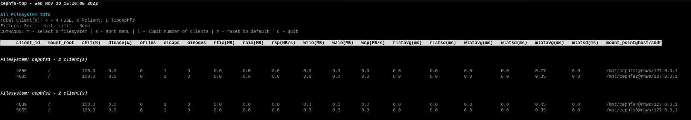

Notice
This document is for a development version of Ceph.
CephFS Top Utility
CephFS provides top(1) like utility to display various Ceph Filesystem metrics in realtime. cephfs-top is a curses based python script which makes use of stats plugin in Ceph Manager to fetch (and display) metrics.
Manager Plugin
Ceph Filesystem clients periodically forward various metrics to Ceph Metadata Servers (MDS) which in turn get forwarded to Ceph Manager by MDS rank zero. Each active MDS forward its respective set of metrics to MDS rank zero. Metrics are aggregated and forwarded to Ceph Manager.
Metrics are divided into two categories - global and per-mds. Global metrics represent set of metrics for the filesystem as a whole (e.g., client read latency) whereas per-mds metrics are for a particular MDS rank (e.g., number of subtrees handled by an MDS).
Note
Currently, only global metrics are tracked.
stats plugin is disabled by default and should be enabled via:
$ ceph mgr module enable stats
Once enabled, Ceph Filesystem metrics can be fetched via:
$ ceph fs perf stats
The output format is JSON and contains fields as follows:
version: Version of stats output
global_counters: List of global performance metrics
counters: List of per-mds performance metrics
client_metadata: Ceph Filesystem client metadata
global_metrics: Global performance counters
metrics: Per-MDS performance counters (currently, empty) and delayed ranks
Note
delayed_ranks is the set of active MDS ranks that are reporting stale metrics. This can happen in cases such as (temporary) network issue between MDS rank zero and other active MDSs.
Metrics can be fetched for a particular client and/or for a set of active MDSs. To fetch metrics for a particular client (e.g., for client-id: 1234):
$ ceph fs perf stats --client_id=1234
To fetch metrics only for a subset of active MDSs (e.g., MDS rank 1 and 2):
$ ceph fs perf stats --mds_rank=1,2
cephfs-top
cephfs-top utility relies on stats plugin to fetch performance metrics and display in top(1) like format. cephfs-top is available as part of cephfs-top package.
By default, cephfs-top uses client.fstop user to connect to a Ceph cluster:
$ ceph auth get-or-create client.fstop mon 'allow r' mds 'allow r' osd 'allow r' mgr 'allow r'
$ cephfs-top
Description of Fields
- chitCap hit
Percentage of file capability hits over total number of caps
- dleaseDentry lease
Percentage of dentry leases handed out over the total dentry lease requests
- ofilesOpened files
Number of opened files
- oicapsPinned caps
Number of pinned caps
- oinodesOpened inodes
Number of opened inodes
- rtioTotal size of read IOs
Number of bytes read in input/output operations generated by all process
- wtioTotal size of write IOs
Number of bytes written in input/output operations generated by all processes
- raioAverage size of read IOs
Mean of number of bytes read in input/output operations generated by all process over total IO done
- waioAverage size of write IOs
Mean of number of bytes written in input/output operations generated by all process over total IO done
- rspRead speed
Speed of read IOs with respect to the duration since the last refresh of clients
- wspWrite speed
Speed of write IOs with respect to the duration since the last refresh of clients
- rlatavgAverage read latency
Mean value of the read latencies
- rlatsdStandard deviation (variance) for read latency
Dispersion of the metric for the read latency relative to its mean
- wlatavgAverage write latency
Mean value of the write latencies
- wlatsdStandard deviation (variance) for write latency
Dispersion of the metric for the write latency relative to its mean
- mlatavgAverage metadata latency
Mean value of the metadata latencies
- mlatsdStandard deviation (variance) for metadata latency
Dispersion of the metric for the metadata latency relative to its mean
Command-Line Options
To use a non-default user (other than client.fstop) use:
$ cephfs-top --id <name>
By default, cephfs-top connects to cluster name ceph. To use a non-default cluster name:
$ cephfs-top --cluster <cluster>
cephfs-top refreshes stats every second by default. To choose a different refresh interval use:
$ cephfs-top -d <seconds>
Refresh interval should be a positive integer.
To dump the metrics to stdout without creating a curses display use:
$ cephfs-top --dump
To dump the metrics of the given filesystem to stdout without creating a curses display use:
$ cephfs-top --dumpfs <fs_name>
Interactive Commands
- mFilesystem selection
Displays a menu of filesystems for selection.
- sSort field selection
Designates the sort field. ‘cap_hit’ is the default.
- lClient limit
Sets the limit on the number of clients to be displayed.
- rReset
Resets the sort field and limit value to the default.
- qQuit
Exit the utility if you are at the home screen (all filesystem info), otherwise escape back to the home screen.
The metrics display can be scrolled using the Arrow Keys, PgUp/PgDn, Home/End and mouse.
Sample screenshot running cephfs-top with 2 filesystems:

Note
Minimum compatible python version for cephfs-top is 3.6.0. cephfs-top is supported on distros RHEL 8, Ubuntu 18.04, CentOS 8 and above.
Brought to you by the Ceph Foundation
The Ceph Documentation is a community resource funded and hosted by the non-profit Ceph Foundation. If you would like to support this and our other efforts, please consider joining now.